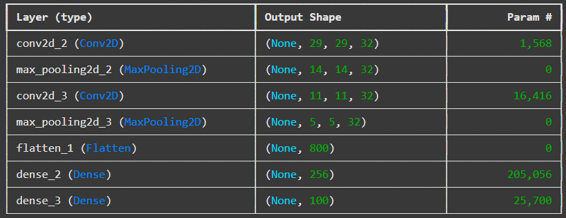
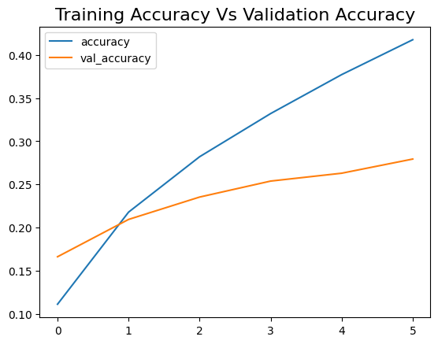
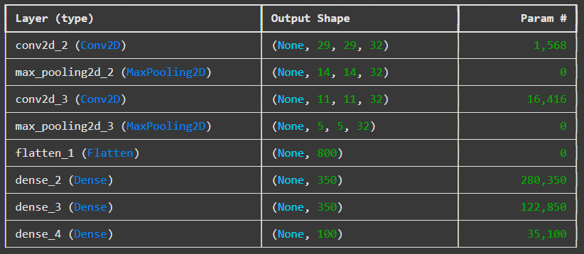

Code - Convolutional Neural Networks (objects recognition)

In this formative assignment, I used the code provided in Unit 9, Machine Learning module, and applied changes in order to analyze another set (CIFAR-100). The difference between the initial set CIFAR-10 and newly implemented CIFAR-100 is the number of classes -- 10 and 100, respectively.
See the code with commentary and outcomes.
In the first step, as previous network hyperparameters remained unchanged, with the increase of classes
we obviously observe a significant drop in model accuracy (63% to 30%).


This forces us to reshape the networks architecture: increasing a number of neurons in hidden layer (from 256 to 350) as well as doubling the layer itself.
However, the obtained results do not meet any acceptable level.


And for another round: